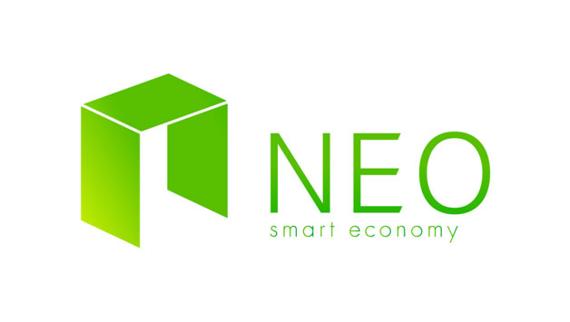

History of Blockchain Technology
It's still early days for blockchain
Hamster Dance stage
via GIPHY

Bitcoin

Early Ideas

"Satoshi Nakamoto", October 31, 2008

The Genesis Block
Block 0
Mined on Jan 3, 2009
Bitcoin Pizza Day
Visit pizzaforcoins.com to find out what pizza joints near you will accept bitcoin!
Alternatively, read venture capital firm Ledra Capital's analysis of why that expensive pizza does not matter.
Altcoin

Volatility
Bitcoin reaches an all-time high price in April, 2013 and then crashes immediately afterwards.

source: coindesk.com
Blockchain 2.0
Smart contracts

Ethereum
Decentralized Applications
The Smart Economy

Blockchain 3.0
The Decentralized Web